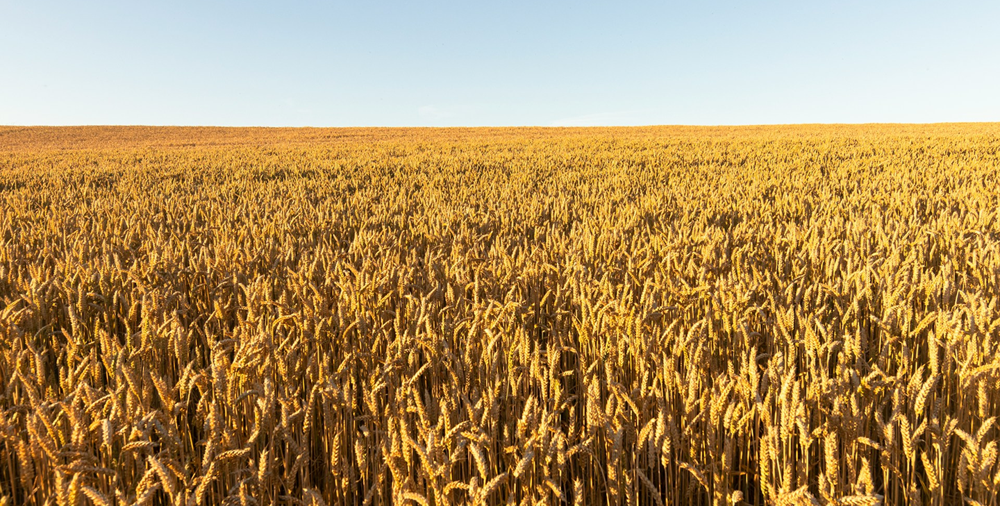

Como alimentar 8 bilhões de pessoas?
A pergunta que os grandes líderes estão (ou pelo menos deveriam estar) em busca da resposta.
Por muito tempo, essa questão pareceu ser impossivel de ser solucionada, mas nos dias atuais com as diversas tecnologias que temos acesso, esse problema se torna cada vez mais possível de se alcançar para ser solucionado. Através de muitas pesquisas e dados reunidos, nossa equipe desenvolveu essa plataforma que, além de muitas outras coisas, conta com uma calculadora de alimentação para grandes populações e alternativas mais saudáveis para essa questão sem a necessidade do consumo em massa de produtos ultraprocessados.

Situação Atual do Mundo
Como todos sabemos, uma área de produção e trabalho que vem crescendo muito nos últimos anos é a alimentação; Só no Brasil, a estimativa dos registros de abertura de restaurantes chegou a ser de 250 mil novos negócios em apenas um ano! Porém, cerca de 29 mil estabelecimentos para mais acabam se fechando no mesmo período, e por quê isso acontece? Alguns dos principais motivos é por falta de planejamento, concorrências, baixa barreira de entrada e custos operacionais, todas essas questões são reais, muitas empresas acabam abrindo seus negócios por pensarem que será fácil, mas quando menos esperam elas tendem a fechar fechar às portas. Nesse mesmo tema, a produção de alimentos de origem animal terrestre no mundo disparou nas últimas décadas, com as atenções voltadas para ovos, aves e carne suína. Não são só os restaurantes que têm uma taxa grande de crescimento, a pecuária se consolidou como um dos setores agrícolas de maior crescimento, segundo a FAO (Organização das Nações Unidas para Alimentação e Agricultura). Com o crescimento da população em grande escala, a produção de comida também precisaria crescer da mesma forma, porém nem sempre isso é possível. E a missão que nos foi proposta foi pensar em formas de reverter essa situação.